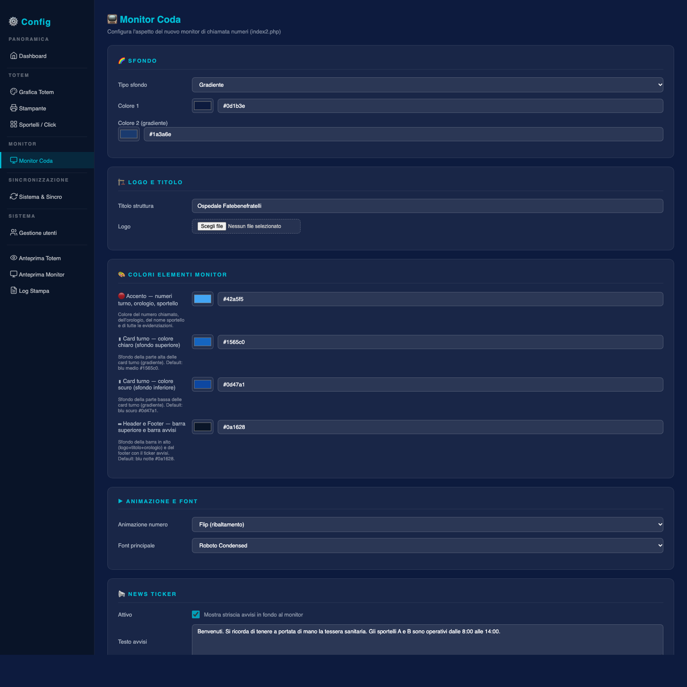

Monitor coda
Il display di sala d'attesa: sfondo, colori, tipografia, animazione dei numeri, notizie scorrevoli, area multimediale e voce che annuncia le chiamate.

index2.php a ogni caricamento del display.Sfondo e intestazione
| Impostazione | Valori |
|---|---|
| Tipo di sfondo | gradiente, colore, immagine |
| Colori del gradiente | Due colori esadecimali, ignorati con sfondo a immagine |
| Immagine di sfondo | JPG, PNG, GIF, WebP; salvata in immagini/ con nome normalizzato |
| Titolo struttura | Testo in testa al display, fino a 200 caratteri |
| Logo | PNG con trasparenza o SVG; è l'unico elemento che accetta il vettoriale |
Il monitor si legge a 4–8 metri. Uno sfondo fotografico riduce il contrasto dei numeri: se il display è in una sala luminosa, meglio gradiente scuro e numeri chiari. Se usi un'immagine, scegline una con la parte centrale uniforme, dove compaiono i turni.
Colori, animazione e carattere
| Parametro | Effetto |
|---|---|
colore_primario | Accento di header, bordi e numero chiamato |
colore_testo | Testo generale del display |
colore_riga_pari | Sfondo della prima riga della tabella turni |
colore_riga_dispari | Sfondo della seconda riga, usato anche nell'header |
animazione | flip, slide, flash, zoom |
font_principale | Roboto Condensed, Rajdhani, Orbitron, Arial, Segoe UI |
L'animazione scatta quando un numero viene chiamato: flip ribalta la riga, slide la fa scorrere, flash lampeggia, zoom ingrandisce. Su TV con elettronica lenta il flip è il più fluido; lo zoom è il più visibile a distanza.
Notizie scorrevoli
Una barra di testo che scorre in continuo, utile per avvisi di servizio (“ritiro referti dalle 10:00 alle 12:00”). Si attiva con una casella, si scrive in un campo multilinea e si regola la velocità in secondi (da 10 a 300): valori alti significano scorrimento più lento.
La barra non va a capo: un avviso di mille caratteri costringe il paziente ad aspettare minuti per rileggerlo. Spezza in due o tre messaggi brevi e ruotali.
Area multimediale
La colonna laterale del display può mostrare immagini e video della struttura. Il funzionamento è a cartelle:
| Cartella | Contenuto | Formati |
|---|---|---|
immaginicliente/ | Immagini promozionali o informative | JPG, PNG, GIF, WebP |
videocliente/ | Video brevi, senza audio o con audio irrilevante | MP4 (H.264 consigliato) |
immagini/ | Immagine di servizio mostrata quando le cartelle sono vuote | JPG, PNG, GIF, WebP |
La durata (da 1 a 300 secondi) indica quanto resta visibile ogni immagine. Per i video il conto parte solo alla fine della riproduzione: il passaggio al contenuto successivo avviene al termine del filmato.
- Carica i file
Copia immagini e video nelle rispettive cartelle sul server, con nomi senza spazi né accenti.
- Imposta la durata
Dieci secondi vanno bene per un'immagine con poche parole; per un video il valore viene comunque superato dalla durata del filmato.
- Scegli l'immagine di servizio
È il contenuto di riserva: senza di essa, a cartelle vuote, la colonna laterale resta nera.
- Ricarica il display
Apri
index2.phpsulla TV: il monitor non si aggiorna da solo quando cambi i file.
Voce degli annunci
Le chiamate possono essere pronunciate ad alta voce. Le voci disponibili dipendono da cosa è installato sul server:
| Voce | Tipo | Note |
|---|---|---|
| Elsa, Isabella | Neural femminile | Cache pregenerata, la più naturale; Elsa è il default |
| Diego, Giuseppe | Neural maschile | Giuseppe è multilingua |
| Paola, Riccardo | Piper / cache locale | Buona qualità, nessuna dipendenza esterna |
| mb-it2, mb-it3 | Mbrola | Richiede il pacchetto Mbrola installato |
it | eSpeak | Sintetica base, sempre disponibile come riserva |
La velocità si regola da 80 a 220 parole al minuto: sotto 110 l'annuncio è più comprensibile in sale rumorose, sopra 160 diventa affrettato. Il pulsante Ascolta anteprima usa voce e velocità selezionate senza aspettare una chiamata reale.
La prima volta che una voce pronuncia un numero, il server genera il file e lo salva in tts_cache/. Le chiamate successive sono immediate. Se cambi voce o velocità, la cache viene rigenerata: i primi annunci possono richiedere qualche secondo in più.
Controllo del display
- apri
index2.phpe verifica che titolo e logo siano quelli attesi; - chiama un turno da uno sportello e osserva animazione, colore e annuncio;
- controlla che la barra notizie scorra alla velocità giusta;
- lascia il display acceso dieci minuti: se si blocca o perde la connessione, il problema è di rete o di memoria del browser, non di configurazione.
linux
Documento statico, consultabile senza connessione